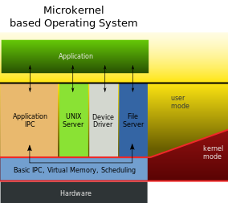
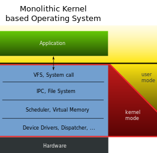
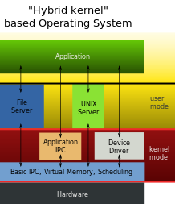

Çekirdek Nedir? Ne yapar?
Çekirdek, en alt katmanda çalışan ve donanımları kullanmamızı sağlayan uygulamalara arayüzlük yapan bir programdır diyebiliriz.

Çekirdek, en alt katmanda çalışan ve donanımları kullanmamızı sağlayan uygulamalara arayüzlük yapan bir programdır diyebiliriz.
Bir çekirdek;
gibi işlemleri yürütür.
Eğer bir çekirdek yapısından bahsetmezsek, donanım kullanımından da bahsedemeyiz. Dolayısıyla aslında sistemi kullanmaktan bahsedemeyiz.
Linux çekirdeği en büyük açık kaynak projelerinden biridir. Belki de en büyüğüdür diyebiliriz. İçerisinde 13 milyondan fazla kod satırı barındırmaktadır.
Monolitik, Mikrokernel ve Hybrid olmak üzere 3 çekirdek yapısından bahsedebiliriz. Tabiiki duruma ve ihtiyaca göre çekirdek yapısı oluşturma durumu her zaman için geçerlidir. Biz, genel olarak sıklıkla tercih edilen yapı modellerine kısaca değineceğiz.

Mikrokernel, işlemci, geçici bellek gibi donanımları ve işlemler arası ilerişimi -IPC- yönetir. Mikrokernel çekirdekte en alt seviyedeki fonsiyonlar, kullanıcı seviyesinde servisler ile sunulur. Mikrokernel modüler yapıdadır. Modüller arası trafik greksinimi olduğundan diğer çekirdek tiplerine nispeten performans sorunları ortaya çıkabilir. İşlemler, kullanıcı seviyesinde sunulduğundan hatalar da burada gerçekleşir ve bütün sistemi etkilemez. Mikrokernel, kullanıcı modunda donanımı kullandırır. Yüksek erişim gerektiren işlemlerde bulunmaz.
Artıları
Eksileri
Süreçler kuyrukta beklemek zorundadır. Süreçlerden biri tamamlanmadan diğeri işleme alınmaz. Önem sırası veya duruma göre direkt işleme alma özelliği yoktur.

Monolitik Kernel, Mikrokernel gibi sadece işlemci, hafıza gibi bileşenleri yönetmez. Bunlarla beraber aygıt sürücüleri, dosya sistemi yönetimi gibi konular da monolitik kernelin yönetimi kapsamındadır. Monolitik Kernel, tek bir dosyadan oluşur ve tüm gereksinimleri bu dosyadadır. Dolayısıyla modüler değildir. Bu da yapılacak işlemlerde süreç sırası dezavantajını ortadan kaldırır.
Monolitik Kernel’de Mikro Kernel’in aksine çok görevlilikten ve daha etkin donanım erişiminden bahsedebiliriz. Bir programdan bilgi almak veya başka bir işlemi gerçekleştirmek gerektiğinde süreç sırasında bekleme durumu yoktur. Bunun gibi durumlarda direkt gerçekleştirme veya erişim söz konusudur. Bu da performans konu olduğunda olumlu sonuç doğurur.
Monolitik Kernel’de birçok işlem yönetici modunda ve tek bir süreçmiş gibi çalıştığından bir hata meydana geldiğinde tüm sistem bundan etkilenir.
Artıları
Eksileri

Hybrid Kernel, diğer kernel tiplerindeki gibi tek bir modda çalışmaz. Yani duruma göre kullanıcı modu ve yönetici modu çalışma durumuna sahiptir. Genellikle donanım sürücüleri ve dosya sistemi gibi bileşenlerde kullanıcı modunda çalışır. IPC ve sunucu çağrıları gibi bileşenlerde ise yönetici modunda çalışır.
Artıları
Eksileri
şimdi de konuya işletim sistemleri açısından ve Linux tarafından bakalım.
Linux monolitik çekirdek kullanır. Diğer bildiğimiz işletim sistemleri MacOs ve Windows ise hybrid çekirdek yapısındadır.
Linux’un monolitik çekirdek kullanması tartışmaya açık ve her zaman tartışılan bir konu olmuştur. Monolitik çekirdek, yapısı itibariyle tek dosya üzerinde çalışır ve tüm gereksinimlerini bu dosya üzerinde bulundurur. Mesela bir aygıt sürücüsü, çekirdeğe bütünleşiktir. Bu sebeple Monolitik Çekirdek çok kararlı bir yapıya sahiptir.
Monolitik Çekirdek’te sistemimizde tanınmayan bir aygıt varsa o aygıtın sürücüsünü sisteme ekleme şansımız yoktur. Bu işlem için çekirdeği baştan derlememiz gerekir.
Örneğin Nvidia ve Ati sürücüleri çekirdeğe eklenmediği için sistem tarafından tanınmaz ve bunu düzeltebilmek için çekirdek katmanında işlemler yapmak, çekirdeği tekrar derlemek, inşa etmek gerekir. Bu işlemde çıkabilecek bir problemde istem kullanılmaz hale gelebilir.
Bu durum da son kullanıcı bazında işlem tipinin, sayısının durumuna göre bir dezavantaj sayılabilir. Fakat bu dezavantaj gibi görünen konulara rağmen bu mimari güncel işletim sistemleri arasında en çok platform desteği sağlayan mimaridir.
Bununla beraber PCI Hotplug, Cpu Hotplug gibi teknolojilerin kullanıldığı ilk mimaridir. Bu da mimarinin gelişme hızı ve duruma göre reaksiyon alma kabiliyetine önemli bir işarettir.
Hybrid Çekirdek yapısında ise yukarıda da söylediğimiz gibi diğer 2 çekirdeğin de özellikleri söz konusudur. Monolitik çekirdekten önemli ayrımı herhangi bir sürücü yüklemesinde çekirdek derlemeye gerek yoktur. Bu anlamda daha fazla esneklikten bahsedebiliriz fakat kararlılık, esnekliğe ters oranda ilerleyebilir ve tatışmaya açıktır.
Monolitik çekirdeğin sağladığı kararlılığın yanında esnekliğe açık olmadığını düşünenler Linux tarafında da Mikrokernel çalışması yapmaktalar. Fakat uzun süredir devam eden bir proje olmasna rağmen kararlı bir sürüme henüz kavuşmamıştır.
Merak ederseniz projenin sitesini inceleyebilirsiniz.
http://www.gnu.org/software/hurd/hurd.html
Denemek isterseniz de yükleme şansınız var.
http://www.debian.org/ports/hurd/hurd-cd
Belki ileriki sayılarımızda hurd konusuna daha detaylı değiniriz.
Toparlayacak olursak
Son kullanıcı ve sistem kullanımı tarafında çekirdek, yapı, mimari tartışmaları hep devam edecektir. Özellikle son kullanıcı bazında göreceli durumlar yeni tartışmalara ve dolayısıyla yeni fikirlere ve üretimlere sebep olacaktır.